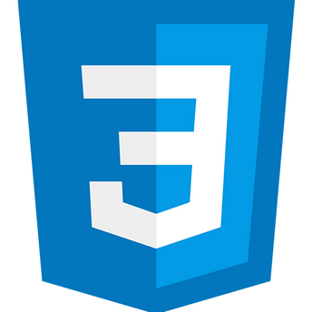
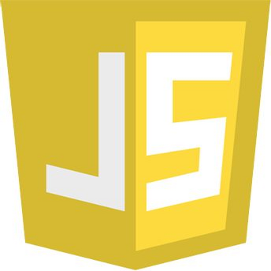
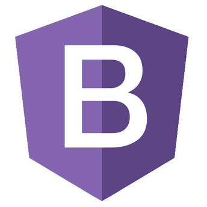
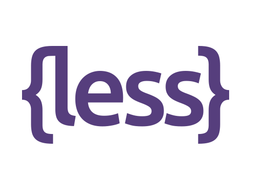

Bootstrap združuje pripravljen mrežni sistem, komponente in uporabne razrede, s katerimi hitreje zgradiš pregleden vmesnik brez ponavljajočega se CSS-ja.
Bootstrap najbolje zaživi, ko ga povežemo s temeljnimi spletnimi tehnologijami.
Semantična struktura strani, obrazci, medijski elementi in osnova za komponente.

Barve, tipografija, animacije in prilagoditve, ki nadgradijo privzeti videz ogrodja.

Interaktivnost za modalna okna, offcanvas menije, vrtiljake in validacijo vmesnika.

Pripravljene komponente, mrežni sistem in utility razredi za hiter razvoj.
Bootstrap je tesno povezan s predprocesorjem Sass, saj so v njem zapisane spremenljivke, mixini in zemljevidi prelomnih točk. To olajša prilagajanje barv, razmikov in tipografije brez ročnega popravljanja vsake komponente posebej.
V starejših projektih se lahko srečamo tudi z Lessom. Čeprav ga novejše različice Bootstrapa ne uporabljajo več kot privzeto rešitev, je dobro poznati razliko med preteklimi in sodobnimi delovnimi tokovi pri gradnji slogovnih datotek.

S pomočjo spremenljivk hitro uskladimo videz celotnega spletišča. Enotna barvna paleta, nadzor nad razmiki in možnost sestavljanja manjših slogovnih modulov pomenijo hitrejše delo, manj napak in lažje vzdrževanje.
Pri učenju Bootstrapa je zato smiselno razumeti tako delo z že pripravljenimi razredi kot tudi, kako ogrodje prilagodimo z lastnimi slogovnimi pravili.
"Bootstrap mi je pomagal, da sem prvi odzivni prototip postavil bistveno hitreje. Največja prednost je jasen mrežni sistem in dobra dokumentacija."
"Pri poučevanju je zelo uporaben, ker študenti hitro vidijo razliko med strukturo HTML, uporabnimi razredi in lastnim CSS-jem."
"Ko potrebujem hitro in dosledno oblikovano administracijo, so pripravljene komponente in obrazci velika prihranitev časa."